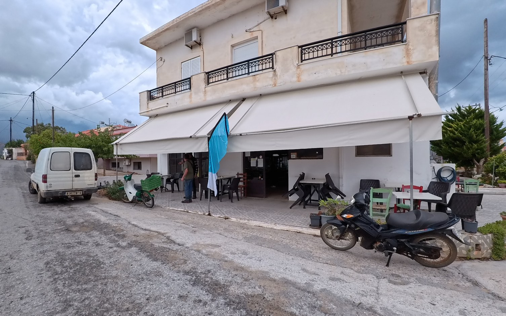
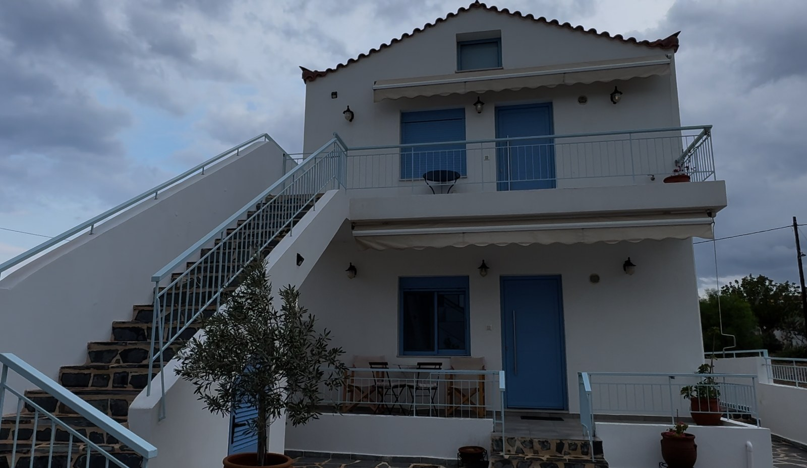
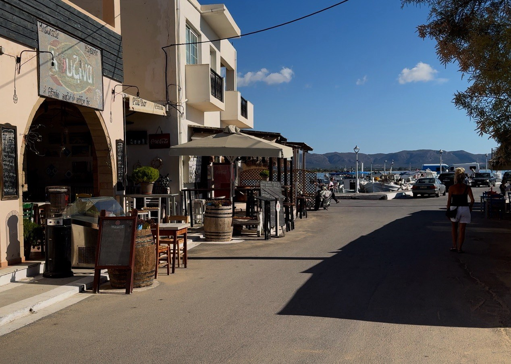
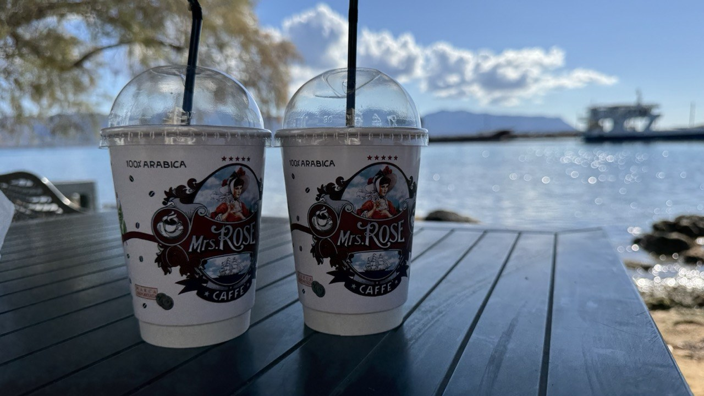
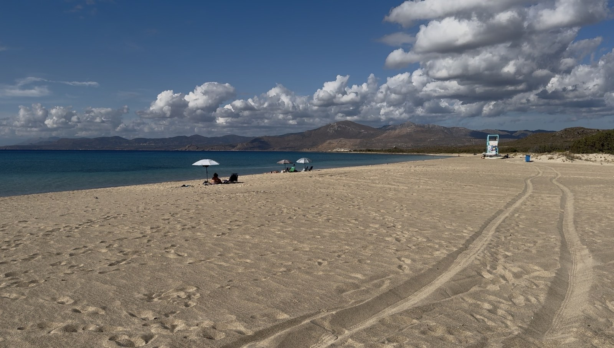

There are places in Greece that you stumble across almost by accident, and others that feel as though you’ve driven to the very edge of civilisation to find them. Vigklafia, tucked away in the far south of the Peloponnese, falls firmly into the second category. It’s quiet, traditional and a little out of the way, but perfectly placed for discovering one of the most beautiful islands and beaches we’ve encountered on our travels around Greece.
Just five minutes away, a little ferry crosses to Elafonisos, where white sand and impossibly turquoise water make you wonder whether you’ve somehow taken a wrong turn and ended up in the Caribbean.
We came for the location. We found a lovely little village, a glimpse of everyday Greek life and a beach day that felt like discovering paradise.
VIGKLAFIA – A QUIET CORNER OF THE PELOPONNESE
Vigklafia is the last village in the Vatika plain before you reach Pounta port and the ferry to Elafonisos. It’s remote enough to feel as though you’ve reached the end of the world, but conveniently placed for exploring this beautiful corner of the southern Peloponnese.
You won’t find designer boutiques, waterfront cocktail bars or tourist shops selling fridge magnets. Instead, there’s a peaceful, traditional Greek village where life carries on much as it always has.
There are four tavernas, a local shop-café and accommodation scattered around the surrounding countryside. When we visited at the end of September, the summer season was winding down and only one taverna remained open. Vigklafia isn't somewhere to come looking for nightlife or a packed holiday programme. It's somewhere to slow down, enjoy a simple Greek meal and use as a base for exploring the area.
Pounta port is just a five-minute drive away, while the long, sandy Pouda Beach is nearby. Neapoli is around 15 minutes away by car, and the extraordinary medieval settlement of Monemvasia can be reached in approximately 50 minutes.
For us, it was an ideal base: peaceful village life with some of the Peloponnese's most interesting sights within easy reach.
EVERYDAY GREEK LIFE – WITH A SIDE OF ICED COFFEE

The real heart of Vigklafia wasn't a historic monument or a photogenic square. It was the local café-shop directly opposite our apartment.
On first entering, it was difficult to work out exactly what was going on. There were local men sitting around a table, a television on the wall (turned off, for reasons known only to the television), fridges filled with produce and a counter serving coffee. It was part café, part village shop and part unofficial social club.
From early morning onwards, there was a constant stream of people dropping in for iced coffee and bottled water before heading off to start their day. Our apartment was directly opposite, so we could watch this little slice of everyday Greek life unfold from our doorstep.
Friday and Saturday evenings were particularly entertaining. The place filled up, and finding a spare seat would have been something of a challenge.
These are the moments we enjoy most when travelling. You can visit all the famous landmarks and photograph every picturesque harbour, but sometimes watching ordinary life unfold tells you just as much about a place.
OUR LITTLE HOME FROM HOME – VIGKLAVIA COSY APARTMENT 1

Our apartment was another pleasant surprise. It was an immaculate ground-floor property with a lovely courtyard and plenty of parking. It wasn't flashy or sophisticated, but it was comfortable and thoughtfully equipped.
There was ample storage, a comfortable lounge, a spacious bathroom, a washing machine and all the kitchen gadgets we could reasonably want. Even the beach equipment was provided, including flippers and a beach umbrella.
Our host was lovely, too. During our stay, she thoughtfully left homemade bread and home-grown figs on our doorstep. No grand gesture, no fuss, just a kind and generous touch that made us feel at home.
We settled into our quiet little corner of the village, with the ferry to Elafonisos practically on our doorstep and then we discovered the island.
ELAFONISOS – WE FOUND PARADISE
Just five minutes from Vigklafia is Pounta port, where a small ferry carries passengers and cars across to Elafonisos.
The crossing is ridiculously easy. When we visited, it cost €2 per passenger and €13 for the car. Around ten minutes later, we were stepping onto the island. No complicated travel arrangements or lengthy ferry journey. Just drive to the port, board the boat and, before you've finished thinking about it, you're somewhere completely different.


The first thing you see is the pretty harbour village, with tavernas, cafés and bars lining the waterfront. It has a lovely holiday atmosphere without feeling excessively developed.
We stopped at Rose Café for an iced latte and, more importantly, picked up a spinach pie for our beach picnic. Because no Greek beach day is complete without one.
Then we headed off on the short, roughly four-kilometre drive to Simos Beach.
SIMOS BEACH – THE WOW FACTOR
Honestly, nothing quite prepares you for Simos Beach.
You come around the road, and suddenly there it is: an extraordinary sweep of almost impossibly white sand, backed by dunes and surrounded by the clearest turquoise water we've seen on this trip.
It looks almost Caribbean.
Pale aquamarine gives way to deeper shades of turquoise, with the white sand beneath the shallow water making everything look even more vivid. It's the sort of view that makes you stop talking for a moment.
Then, of course, you start taking photographs, trying to capture what you're seeing while knowing perfectly well that a photograph probably won't do it justice.
The sea is wonderfully shallow, too. You can walk out a surprisingly long way and still find yourself only waist-deep. The water is so clear that you can see your feet beneath you as you wander further out. Naturally, we took full advantage.
We spent the day swimming, strolling along the sand, sitting in the shallows and generally doing very little at all. No frantic sightseeing schedule, no rushing off to squeeze in another attraction. Just a ridiculously beautiful stretch of coastline to enjoy.
Sometimes you don't need an itinerary. You just need a beach this good. Simos was everything we'd hoped for in a Greek island beach day: beautiful sand, clear water and space to enjoy the surroundings without feeling part of a human traffic jam.
We'd found our little piece of paradise.
BEYOND SIMOS – MORE BEACHES TO EXPLORE
Simos may be Elafonisos's star attraction, but it isn't the island's only beautiful beach. If you have more than a day here, there are several other stretches of coastline worth discovering.
Sarakiniko – The Other Side of Paradise
Sarakiniko is closely connected to Simos, forming part of the famous twin-beach landscape. The two sandy bays sit on either side of a narrow peninsula, with pale sand, clear turquoise water and dunes creating the distinctive scenery that makes this part of the island so memorable.
If you love Simos, allow time to explore both sides of the coastline rather than treating them as entirely separate destinations.
Panagia – Sand, Sea and Sunset

On the western side of the island, in the Kato Nisi area, Panagia is another long sandy beach with clear blue-green water, dunes and sea-cedar woodland. Small offshore islets add to the scenery, giving it a different character from the twin bays at Simos.
It's a good choice if you want a change of scene and a more natural, open setting. Its western position also makes it an appealing place to watch the sunset.
Lefki – A Smaller Turquoise Cove
Lefki lies east of the Simos area. It's a smaller beach with pale sand, rocks and beautiful emerald and turquoise water. The clear sea and marine life make it attractive for swimming, while its more modest scale offers a contrast to the expansive sands of Simos.
Facilities are more limited, so take what you need if you plan to spend a while here.
Kontogoni – A Beach Beside the Harbour
Kontogoni is close to the main settlement, within easy reach of cafés and restaurants. It has sandy shores and shallow water, making it a convenient place for a quick swim before lunch or a dip after wandering around the village.
It may not have Simos's dramatic dunes, but the location is a major advantage. You can combine a swim with coffee, lunch or a stroll along the waterfront.
Kalogeras and Megalo Tigani – Close to Town
These smaller beaches near the settlement offer convenient alternatives when you don't want to drive to the island's more famous coastline. Kalogeras is a small beach with shallow water, while Megalo Tigani lies on the eastern side of the settlement, near the ferry area.
They're more about enjoying a simple swim close to town than finding another spectacular sweep of white sand, but they're useful options if you're staying for several days.
Aglyftis – For the More Adventurous
On the western side of the island, beyond Panagia, Aglyftis is a small, pebbly beach in a rugged and secluded setting. Access is difficult and involves a challenging path, so it isn't a casual stop for anyone hoping to park nearby and stroll straight onto the sand.
If you're visiting for only one day, we'd still put Simos at the top of the list. If you have longer, Panagia and Lefki offer a different experience, while Kontogoni and the smaller beaches near the village are convenient for a quick swim.
The island's dunes and sea-cedar woodland are part of what makes these beaches so special, so stick to appropriate paths and take care not to disturb the natural vegetation.
We only had one beach day on our visit, and Simos was more than enough to make us fall in love with Elafonisos. But the other beaches give us another reason to return.
GETTING BACK TO THE MAINLAND
Eventually, reluctantly, we dragged ourselves away from the beach and headed back towards the harbour. There was time for another iced coffee before catching the ferry back to Pounta. That was when we encountered one small detail that hadn't featured in our beach-day daydreams. Reversing onto the ferry.
Apparently, cars board backwards, so you need to be reasonably confident with your reversing skills. Watching other drivers manoeuvre onto the boat while waiting for your turn makes the whole process seem rather more daunting than it probably is.
There's something about reversing towards a boat, with an audience and limited space, that concentrates the mind, but we made it.
Ten minutes later, we were back on the mainland, and within another five minutes we were home in our peaceful little apartment in Vigklafia. It was remarkably easy, and the return crossing made us appreciate just how conveniently located our base had been.
BEST THINGS TO SEE AND DO AROUND VIGKLAFIA
- Visit Elafonisos. Take the short ferry crossing, explore the harbour village and spend time at Simos Beach. If you have longer, discover the island's other beaches, too.
- Spend a day at Pouda Beach. Close to Pounta port on the mainland, this long stretch of white sand and clear water is an appealing alternative if you don't want to take the ferry.
- Discover Pavlopetri. Just offshore from the area around Pouda Beach lies the ancient submerged settlement of Pavlopetri, believed to date back thousands of years. The remains beneath the water make this coastline fascinating for anyone interested in archaeology, although visibility depends on conditions and how you explore the area.
- Explore Neapoli. Around 15 minutes away by car, Neapoli offers a change of scene, a waterfront wander, places to eat and more shops and services than the village.
- Visit Monemvasia. Approximately 50 minutes away, this remarkable medieval settlement sits on a dramatic rock rising from the sea. Its stone lanes, old churches and atmospheric buildings make it well worth allowing a good part of the day to explore.
PRACTICAL TIPS FOR VISITING VIGKLAFIA AND ELAFONISOS
- Where to stay: Vigklafia is ideal if you prefer peaceful accommodation away from busy resorts. Our apartment was comfortable, well equipped and conveniently located for Pounta port.
- Getting around: A car is highly recommended for exploring Neapoli, Monemvasia and the surrounding beaches. You can also take your car across to Elafonisos.
- Ferry prices: The crossing takes around ten minutes. When we visited, it cost €2 per passenger and €13 for the car. Check current fares and ferry arrangements before travelling.
- Food and drink: Village facilities are limited, particularly towards the end of September. Don't assume every taverna will be open. The local café-shop is useful for coffee and essentials, but plan meals around nearby towns if necessary.
- When to visit: Late spring and early autumn are worth considering if you prefer a quieter atmosphere. Summer is likely to be busier, particularly around Simos Beach.
- Allow enough time: Don't treat Simos as a quick photo stop. If you want to explore the other beaches as well, consider staying longer or making a return visit.
OUR VERDICT – IS VIGKLAFIA WORTH VISITING?
Vigklafia isn't a destination that will impress you with grand attractions or a lively holiday scene. It's quiet, unpretentious and perhaps a little too sleepy for some visitors, but that is precisely its appeal.
We loved watching everyday village life from our doorstep, the warmth of our host and the comfort of having a peaceful place to return to after a day exploring. The homemade bread and figs were a lovely bonus, too.
Most importantly, the location was excellent. We could visit Neapoli, explore remarkable Monemvasia and, best of all, reach Elafonisos with almost ridiculous ease.
Would we recommend staying here? Absolutely, if you're looking for a quiet base and have a car. If you want nightlife, lots of restaurants and a resort atmosphere, you'd probably be happier elsewhere.
For us, Vigklafia was a little gem of a base, and Elafonisos was the real revelation. Simos Beach gave us that Caribbean moment we hadn't expected to find in Greece, and the island's other beaches have given us another reason to return.
Sometimes the best places aren't the ones you travel furthest to reach. They're the ones that make discovering somewhere extraordinary surprisingly easy.
And Elafonisos really did feel as though we'd found paradise.